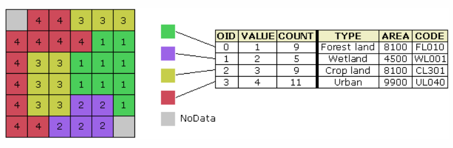
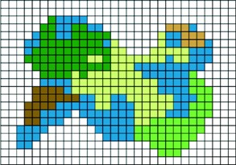

Raster basics
Raster basics
Each raster cell stores a value. That value might be:
- Discrete (categorical): land cover type, zoning class, soil class.
- Continuous (numeric): elevation, temperature, slope, distance.
Cells and zoom
A raster “looks smooth” when zoomed out, but it is always a grid under the hood.

Cell values + attribute table
Categorical rasters often have an attribute table that maps codes to meaning (type, area, etc.).
Fine vs coarse
Compare how the same area can be represented with different cell sizes.

Coarser grid
Coarser rasters generalize more and can “lose” small features.
NoData vs 0
NoData means “unknown / not measured / outside coverage.” A value of 0 is a real measurement or category (depending on the raster).
Why it matters: many raster tools treat NoData as “do not compute,” which can change your outputs.